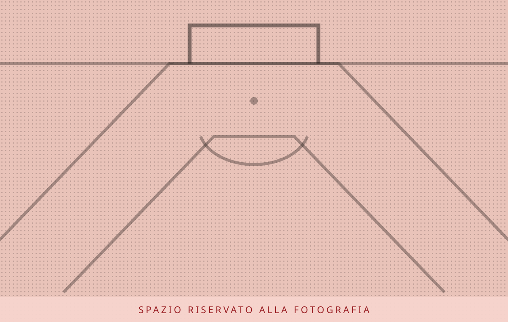

Mercato
Juve contestata, 0-0 al 45' allo Stadium, tre vittorie di fila per De Rossi: le top news delle 22
Serata di tanto calcio e, comprensibilmente, poco calciomercato in questa domenica 1° novembre.
TuttoMercatoWeb · 52 min fa
Quotidiano di trattative, firme e voci di corridoio
Mercato
Serata di tanto calcio e, comprensibilmente, poco calciomercato in questa domenica 1° novembre.
TuttoMercatoWeb · 52 min fa
Pisa
Il Palermo ritrova la via della vittoria contro il Vicenza dopo il pareggio nel turno infrasettimanale contro il Pisa, ribaltando un match frizzante e ricco di occasioni partito in salita a causa del vantaggio di…
TuttoMercatoWeb · 1 h fa
Mercato
Non lo ha annunciato apertamente, ma non ha nemmeno escluso l'ipotesi di un addio.
TuttoMercatoWeb · 18 min fa
Juventus · Napoli
L'articolo Juventus-Napoli, KO poco prima del match: cambia l’attacco proviene da CalcioMercato.it .
Calciomercato.it · 2 h fa
Genoa · Lecce
L'articolo Lecce-Genoa 1-2, volano i rossoblu di De Rossi proviene da CalcioMercato.it .
Calciomercato.it · 2 h fa
Inter
Non è l'Inter più brillante delle ultime stagioni, per utilizzare un eufemismo. Ed ecco che la corsa per il tricolore si riaccende a cavallo tra la fine di ottobre e l'inizio di novembre.
FcInterNews · 2 h fa
Juventus · Napoli
Douglas Luizè intervenuto ai microfoni di DAZN prima di Juventus-Napoli.
TuttoJuve · 2 h fa
Juventus · Napoli
Perde ancora il Napoli di Massimiliano Allegri che si arrende anche contro una delle peggiori Juventus degli ultimi anni: la rete di Alajbegovic e quella di Boga decidono la sfida di Torino.
TuttoNapoli · 12 min fa
Juventus · Napoli
Kerim Alajbegovic si prende la scena in Juventus-Napoli, firmando un gol spettacolare e conquistando un posto nella storia della sfida tra bianconeri e azzurri.
TuttoJuve · 6 min fa
Udinese
L'articolo Udinese, esonero in arrivo per Runjaic: i possibili sostituti proviene da CalcioMercato.it .
Calciomercato.it · 5 h fa
Inter
L'emergenza legata agli infortuni potrebbe far aprire le porte, in casa Inter, ad una soluzione nuova sul mercato. Ecco perché a fine estate si era parlato di una possibile quinta punta, che poi non è arrivata.
FcInterNews · 1 h fa

Mercato
L'articolo Paulo Fonseca allo Sporting, addio immediato al Lione proviene da CalcioMercato.it .
Calciomercato.it · 52 min fa
Calciomercato.it · 7 h fa
Calciomercato.it · 10 h fa
MilanNews · 2 h fa
Calciomercato.it · 13 h fa
Calciomercato.it · 13 h fa
Calciomercato.it · 15 h fa
Calciomercato.it · 23 h fa
Calciomercato.it · 1 g fa
Calciomercato.it · 1 g fa
2 h fa
2 h fa
2 h fa
Tutti pazzi per Tiago Gabriel: tris d’assi in Serie A, Milan accerchiato Calciomercato.it
Un Martinez tira l’altro: l’Inter sfida due italiane per Lisandro Calciomercato.it
Cichella brilla con il Frosinone, è nata una nuova stella in Serie A Calciomercato.it
Udinese-Roma, le ultimissime: diverse novità per Gasperini Calciomercato.it